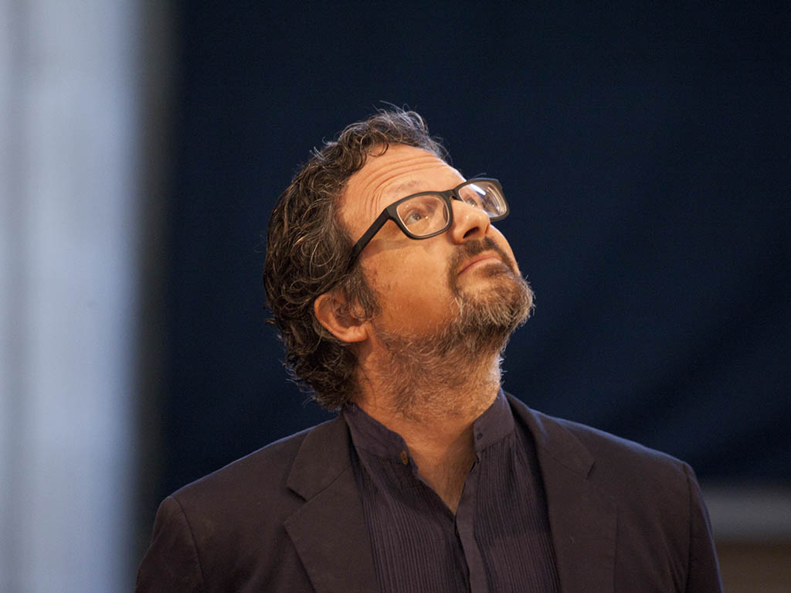

Nacido en México y con formación en química física, Lozano-Hemmer desarrolló una carrera artística orientada al uso crítico de la tecnología. Su enfoque interdisciplinario le permitió integrar conocimientos científicos en la creación de obras complejas y conceptuales.
A lo largo de su trayectoria, ha presentado instalaciones en espacios públicos, museos y bienales internacionales. Sus proyectos a gran escala han intervenido edificios, plazas y paisajes urbanos, convirtiendo el espacio público en un escenario de interacción colectiva.
Su trabajo ha sido ampliamente reconocido por su capacidad para involucrar al público y generar experiencias participativas. Se ha consolidado como una figura clave en el arte contemporáneo vinculado a la tecnología y la interactividad.
El trabajo de Rafael Lozano-Hemmer se basa en el desarrollo de sistemas tecnológicos que reaccionan a la presencia humana. Utiliza dispositivos como cámaras, micrófonos y sensores biométricos para captar información del entorno y transformarla en respuestas visuales o sonoras.
Estas obras funcionan en tiempo real, generando una relación directa entre acción y resultado. El público no solo observa, sino que influye activamente en el comportamiento de la obra, creando experiencias personalizadas y colectivas al mismo tiempo.